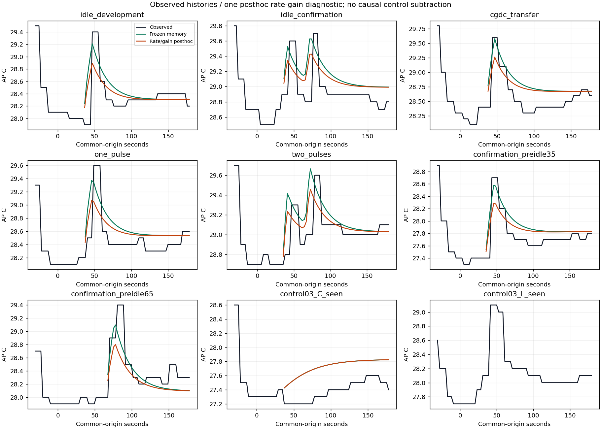
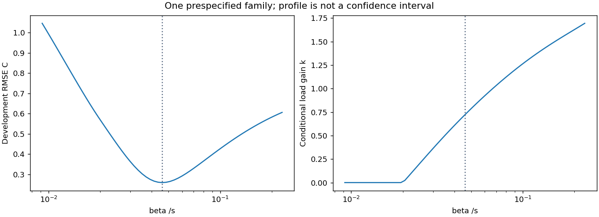

2026-10-02 · 기존 자료의 PC 사후 분석 · 새 실측 0 · 새 후보 미채택
개발 1세션으로 선택한 부하 배율 0.720002는 평균오차를 일부 낮추지만 부하 7세션 모두 최고온도 오차를 키웠습니다. 원래 동결본·준비 이력 후보·독립 확인 결과를 보존합니다. strict/default/experiment_ready=false는 그대로입니다.
T′=β(E−T)+k·u+H, H′=−H/30. 부하 전 AP만 초기화에 사용하고 실제 lane 일정을 입력했습니다. β 최적 격자점은 기존 0.0459325203/s와 같았습니다. 개발 외 결과는 이미 본 자료의 사후 평가입니다.
| 자료 | MAE 기존→진단 °C | 최고온도 부호오차 °C |
|---|---|---|
| 개발 | 0.182549 → 0.162043 | −0.191308 → −0.506260 |
| 최근 +35초 | 0.178596 → 0.171525 | −0.121397 → −0.418394 |
| 최근 +65초 | 0.189876 → 0.216500 | −0.303239 → −0.601102 |
| 무부하 C | 0.346076 → 0.346076 | +0.224617 → +0.224617 |
비교 기준은 τ30/γ0 준비 이력 후보입니다. 공통120초 전체 점수가 아닌 각 첫 부하 이후 유효 AP 표본 창의 점수입니다. 전체 세션·정확한 창·분모

C에는 본 작업이 없지만 일부 고정 구간에 +0.1°C 상승이 있습니다. 이것을 부하 세션 후기 상승과 동일 원인으로 확정하지 않습니다. APK·초기 이력·순서가 다른 자료를 인과 대조로 빼지 않았습니다. L은 부하 전 관측 부족으로 계산하지 않았으며 0으로 채우지 않았습니다.

최저 RMSE+0.05°C 범위는 β0.035126–0.063374/s, k0.499776–0.962386입니다. 기술적 민감도이며 신뢰구간·합격선이 아닙니다. 수치 rank를 물리적 유일성으로 해석하지 않습니다. 무부하에서는 부하 배율 정보가 0이므로 null입니다.
남은 질문은 준비 후 배경 변화와 등록 부하에 따라 이동하는 반응을 구분하는 것입니다. 같은 조건의 대조와 별도 동결 확인이 필요합니다. 같은 B2 반복이나 후보를 계속 바꿔 맞추는 방식은 권고하지 않습니다.
일정·응답 시뮬레이션, 정확히 연결되는 CPU/B2 실측 비용 대조, 기존 준비 이력 후보의 제한된 조건부 AP 평가는 유지합니다. 최근 두 독립 확인의 MAE0.178596/0.189876°C도 보존합니다. 일반 동적 AP·전력·열 피드백 정책 순위는 미검증입니다. 제한된 결과 본문을 완성하기 위해 추가 실측이 필수인 것은 아닙니다.
한국어 판독·최소 해결 조건·재현 · 적합 전 계약 · 검증 · 수치·출처 · 고정 구간 변화 · 시뮬레이터